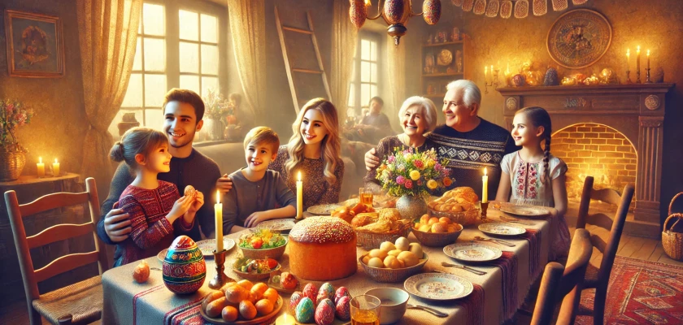

Дата святкування Великодня 2025 року
У 2025 році Великдень припадає на 20 квітня, що є неділію, як і кожен рік. Зазвичай, в Україні понеділок після Великодня є вихідним, але важливо зазначити, що під час воєнного стану це правило може не діяти. Якщо воєнний стан подовжиться, понеділок 21 квітня 2025 року буде робочим.
Страсний тиждень і Великий піст
Перед самим Великоднем віряни проходять через Великий піст, що триває цілих сім тижнів. Протягом цього періоду відбувається обмеження вживання їжі тваринного походження — м'ясо, яйця, молоко та масло. Страсний тиждень є важливою частиною підготовки до Великодня. Це час згадок про останні дні Ісуса на землі, його страждання та смерть. Кожен день Страсного тижня має своє особливе значення:
- Великий понеділок: згадка про Йосипа та прокляття смоківниці.
- Великий вівторок: вивчення Христом пророчих учень.
- Велика середа: згадка про зраду Юди.
- Чистий четвер: згадка установлення таїнства Євхаристії.
- Велика п’ятниця: найскорботніший день, коли Христос помер.
- Велика субота: згадка про зниження Ісуса до пекла.
- Великодня заутреня: урочисте святкування з піснями та молитвами.
Як святкують Великдень в Україні?
Однією з головних традицій є освячення паски, крашанок та інших страв, які складають святковий стіл. Зазвичай, освячення проводиться вночі, після чого віряни збираються з родинами для святкової трапези, де яйця часто стають першою стравою. Крім того, віряни обов'язково подарують милостиню нужденним, що за віруваннями приносить благополуччя та благословення в дім. Це також час, коли важливо проводити час у родинному колі, відновлюючи зв'язки з близькими та рідними.
Традиційні заборони на Великдень
Звичайно, є й деякі речі, які не можна робити на Великдень:
- Не святити алкоголь, страви з крові тварин, овочі чи фрукти, а також матеріальні цінності.
- Не можна працювати — важка фізична робота, прибирання, ремонт чи прання забороняються.
- Не можна сваритися, лаятися чи мати погані наміри.
- Не можна вінчатися або відвідувати кладовище.
- Освячену їжу не можна викидати. Її рекомендується віддати тваринам або спалити.
Maecenas lacinia felis nec placerat sollicitudin. Quisque placerat dolor at scelerisque imperdiet. Phasellus tristique felis dolor.
Maecenas elementum in risus sed condimentum. Duis convallis ante ac tempus maximus. Fusce malesuada sed velit ut dictum. Morbi faucibus vitae orci at euismod. Integer auctor augue in erat vehicula, quis fermentum ex finibus.
Mauris pretium elit a dui pulvinar, in ornare sapien euismod. Nullam interdum nisl ante, id feugiat quam euismod commodo. Sed ultrices lectus ut iaculis rhoncus. Aenean non dignissim justo, at fermentum turpis. Sed molestie, ligula ut molestie ultrices, tellus ligula viverra neque, malesuada consectetur diam sapien volutpat risus. Quisque eget tortor lobortis, facilisis metus eu, elementum est. Nunc sit amet erat quis ex convallis suscipit. ur ridiculus mus.